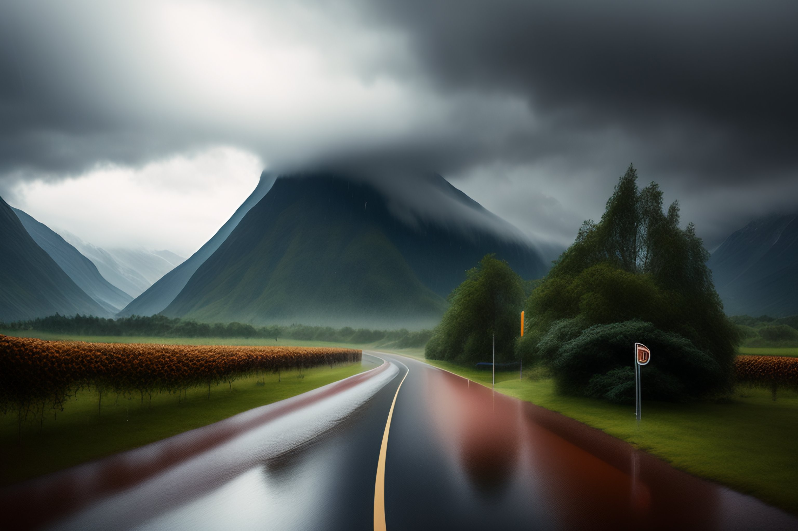

During the summer months, many people head to the beach to enjoy the sun, sand, and sea. Some popular summer destinations include Hawaii, the Caribbean Islands, the Amalfi Coast in Italy, and the Greek Islands
WINTER
In the winter, many people seek out snowy destinations for skiing, snowboarding, and other winter sports. Some popular winter destinations include the Swiss Alps, Aspen in Colorado, Whistler in Canada, and Hokkaido in Japan
RAINY

Some people enjoy traveling during the rainy season to experience the lush, green landscapes that result from the rainfall. Some popular rainy season destinations include Costa Rica, Bali, Kerala in India, and the Amazon rainforest in Brazil
About Us
Tojo is a versatile website that can assist you in planning trips for any season, be it summer, winter, or rainy